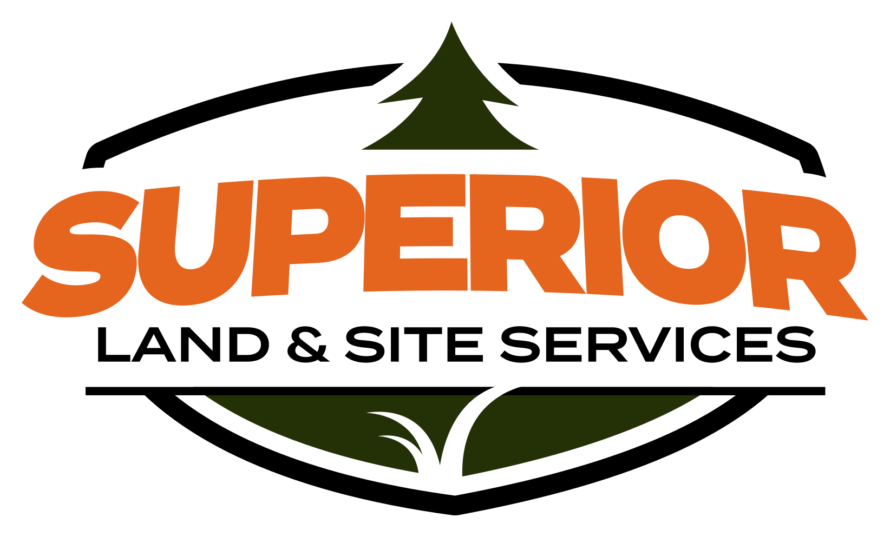
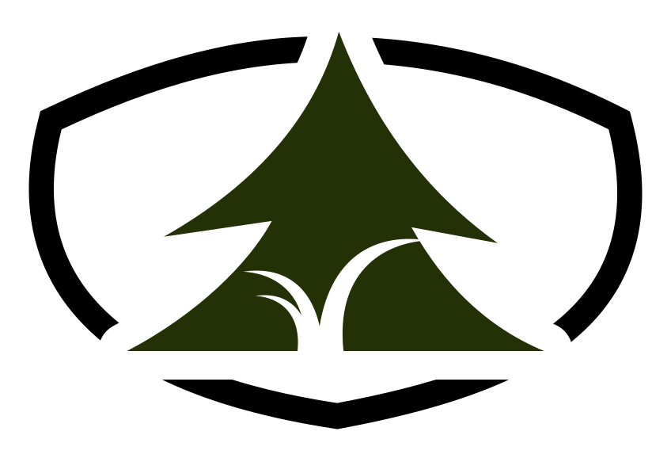
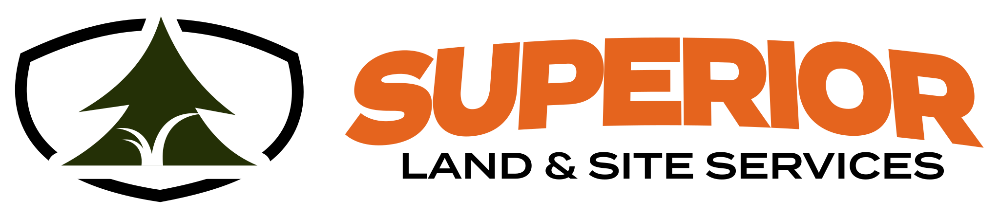
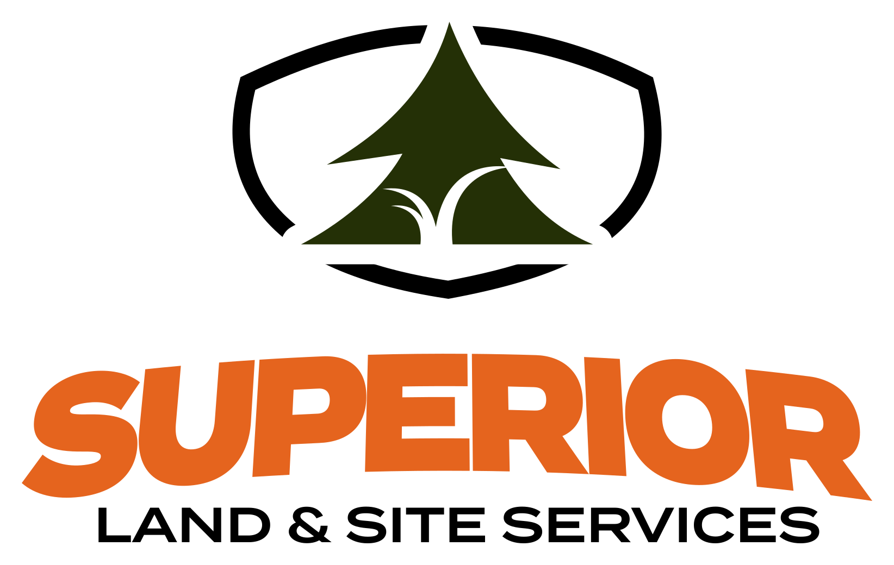
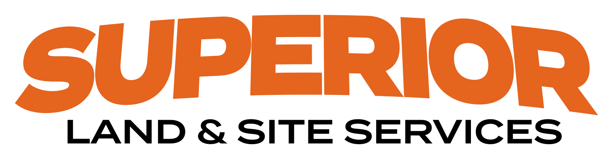
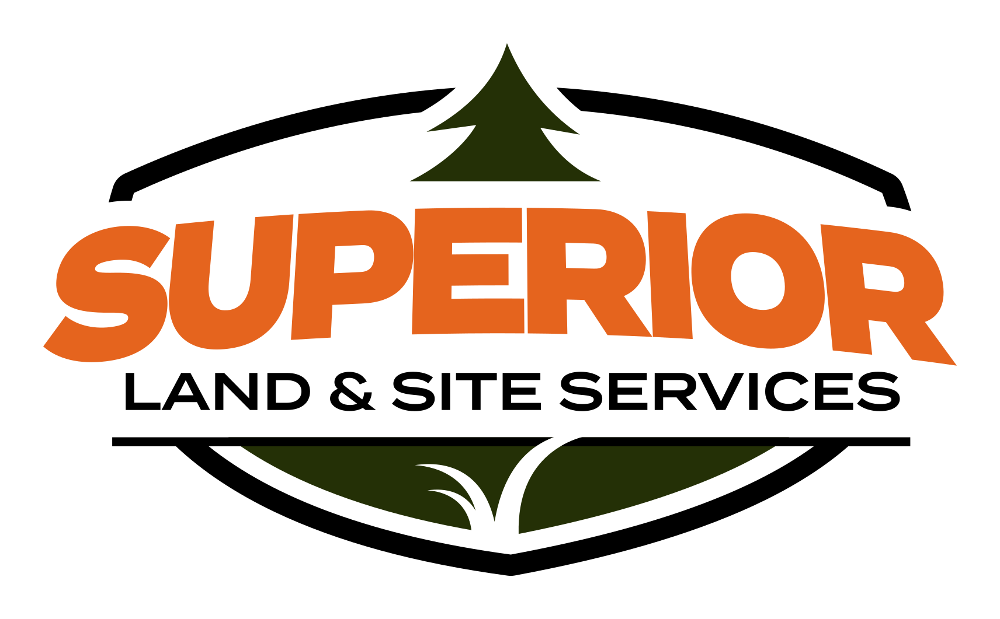
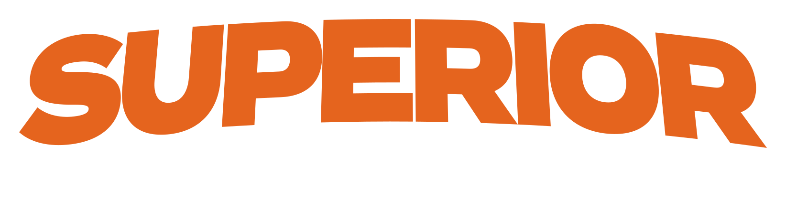

Built for bigger sites
Superior's service promise has always been strong: show up with the right machine, do it right, and leave it finished. The brand now makes that same promise to the clients he's going after.
Tagline: Site work, done right from the ground up.
Contractors & developers
Site prep, pads, stone and final grading for GCs, developers, schools and industrial owners.
Municipalities & townships
Right-of-way and roadside clearing, ditch and berm restoration, culverts.
Estates & acreage
Clearing, ponds, access drives and grading on residential properties of 3+ acres. No small residential work.
One logo, four ways to use it
Everything comes from one master file that holds the logo, the mark and the wordmark in light and dark, so the arched SUPERIOR, the tree, the grade line and the blades are identical everywhere.

What the parts mean: the tree is raw land, the grade line is the finished site, and the grass blades are how every job ends: seeded, strawed and stabilized. The shield's shoulders come from the 1997 badge.




Pick by background
Every logo comes in the same five versions. Choose by what it sits on, not by taste.
-light.svg-dark.svg
-plate.svg-black.svg
-white.svgThe dark versions swap forest #243006 for forest light #5F7B32. Forest is invisible on charcoal (1.1:1). The plate version keeps true colors on a white contour plate, so it works on any paint color, including his green Peterbilt.
Size, space and don'ts
Minimum size
- Logo: 140px or 1.25" wide
- Horizontal lockup: 56px or 0.6" tall
- Mark: 32px or 0.4" wide
- Below the logo minimum, LAND & SITE SERVICES and the blades fill in. Switch to the mark.
Clear space
- Keep the height of the "L" in LAND clear on every side.
- No other logos, text or edges inside that space.
- On photos, use the plate version or a solid charcoal band.
Files
- Every file is outlined SVG. No fonts needed.
- For a sign shop, open in Illustrator and Save As EPS or PDF.
- Change the master and run
build_logos.py; never hand-edit the variants.
Don't
- Never add the phone number to the logo. Set it beside or below the logo.
- Never use the Bobcat cat head, the John Deere deer, or "Bobcat" in the name. They're registered trademarks of other companies.
- Never use the old chrome badge or the AI-generated version anywhere new. Retire them as trucks and signs get redone.
Heritage, quietly
His orange and a deep forest green, used small and deliberately, on charcoal and warm neutrals. No lime, no chrome, no gradients.
Balance
Orange is for the thing to act on: the wordmark, the primary button, a thin rule. Forest belongs to the logo and the occasional accent. Never use either as a large background.
Contrast rules (WCAG 2.2 AA)
| Pairing | Sample | Ratio | Use |
|---|---|---|---|
| Charcoal on orange | Request a bid | 4.7 : 1 | Buttons ✓ |
| White on orange | Request a bid | 3.4 : 1 | Don't use ✗ |
| Orange 700 on limestone | View service → | 5.4 : 1 | Links, labels ✓ |
| Orange 400 on charcoal | Our own fleet | 5.4 : 1 | Labels on dark ✓ |
| Forest light on charcoal | Logo tree | 3.3 : 1 | Graphics only ✓ |
| Forest on charcoal | Logo tree | 1.1 : 1 | Invisible ✗ |
Two jobs, two families
Termina (Adobe Fonts) belongs to the logo only: Bold for the arched SUPERIOR, Demi for LAND & SITE SERVICES. It's outlined in every logo file, so nobody needs it installed.
Barlow Condensed and Barlow run everything else: the website, documents and signage copy. They're free, readable at any size, and sit comfortably next to the wide logo type.
- Headlines: Barlow Condensed 600, uppercase, upright, tracking +1.5%
- Labels and buttons: Barlow 600, 12–14px, tracking 0.1–0.2em, uppercase
- Body: Barlow 400, 17px, line-height 1.65
- No italics and no 800/900 weights
Clearing, grading, ponds, drainage, access roads and final stabilization, done with our own crew and equipment.
Where it lives

REQUEST A BIDShow the work you want
- Commercial, municipal and acreage jobs only. Drone views of whole sites are the strongest shots.
- Show scale: buildings, paving, stadiums, public roads, wide views of large properties.
- Equipment working, not parked in a driveway.
- Before and after from the same spot.
- No small yards, downspouts, sheds or short driveways
- No customers' cars, plates or house numbers
Talk like a contractor
| Say | Not |
|---|---|
| "Request a bid" | "Get a free quote!" |
| "Send the scope, plans or just a location." | "Got a project? Hit us up!" |
| "Our own crew and equipment." | "Industry-leading solutions." |
| "Seeded, strawed and stabilized." | "Your yard will look amazing!" |
Where everything is
Logo
brand/logo/ holds 22 outlined SVGs plus PNG previews. The README covers which file to use where.
Master and build
brand/2026-superior-new-logo.svg is the source. brand/tools/build_logos.py regenerates every variant, the favicon and the site logos.
Web tokens
brand/tokens.css, mirrored in src/styles/global.css: every color above as a Tailwind token.